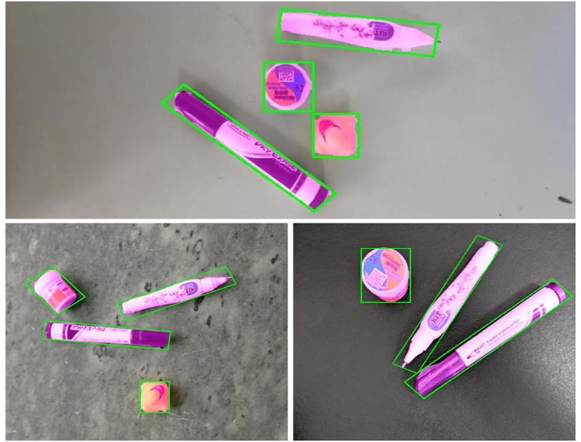
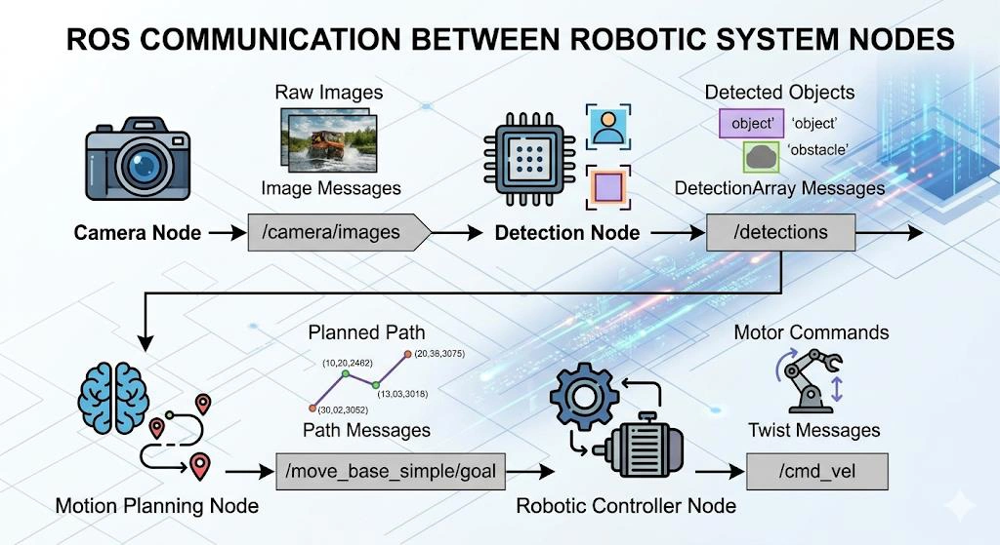
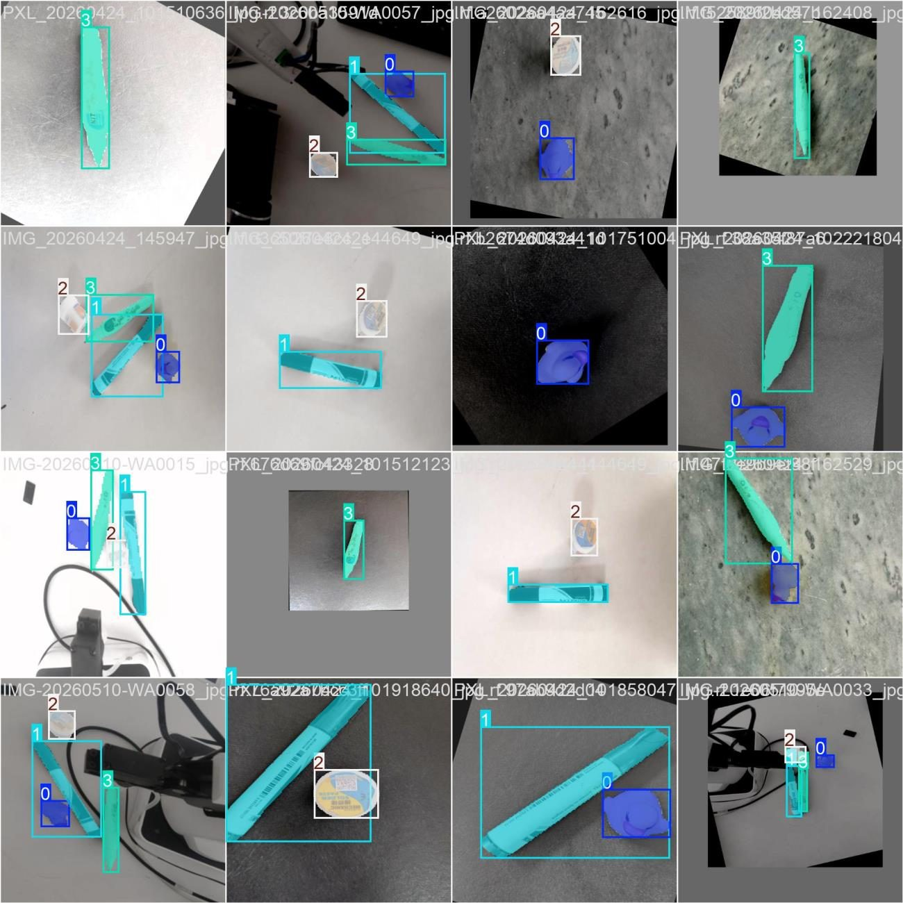
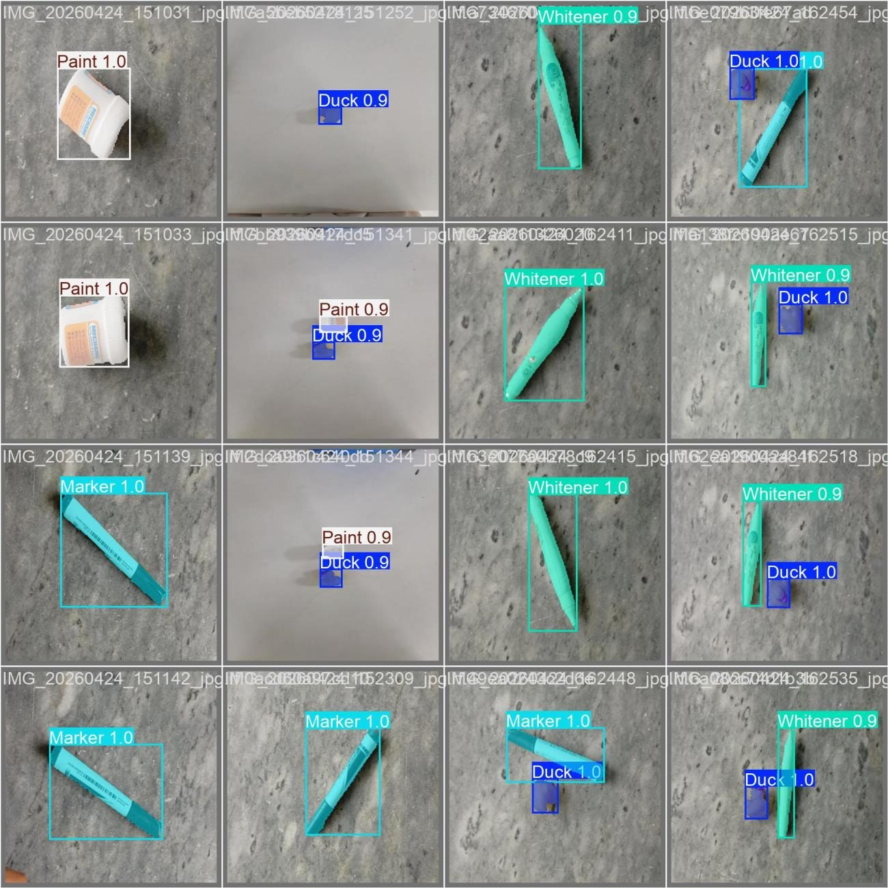
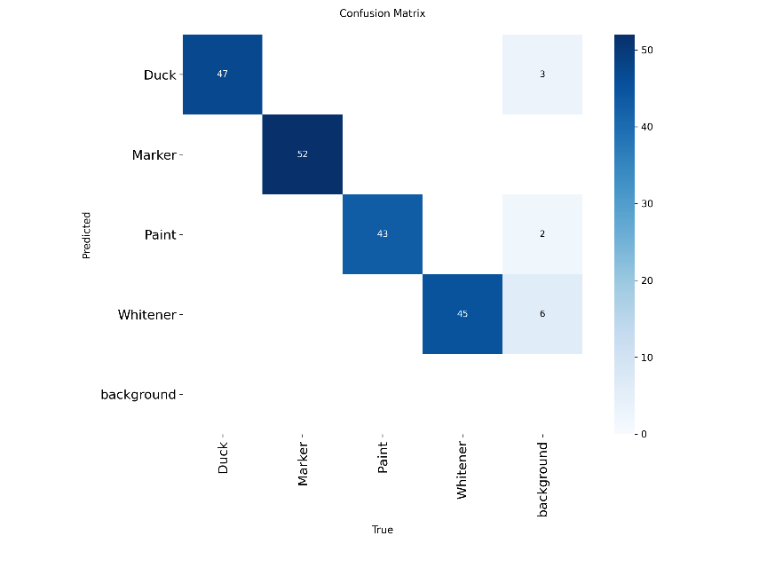
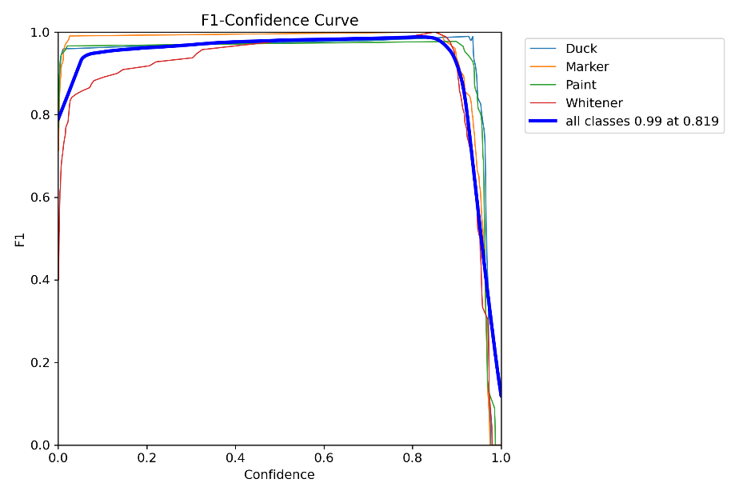

Real‑Time Object Detection and Autonomous Grasping with ROS and YOLOv8
0.9894box mAP50

Key finding
A YOLOv8n detector trained on about 500 hand‑labelled images reaches box mAP50 0.9894 and drives a ROS arm, with GPU inference needed to keep pace with the arm.
- Domain
- Robotics and computer vision
- Year
- 2026
- Team
- Team of 3
- Tools
- ROS
- YOLOv8
- Roboflow
- Result
- Box mAP50 of 0.9894
Summary
What
Vision‑guided pick system in which a YOLOv8 model trained on a custom dataset detects objects from a live camera and passes positions through ROS to a robotic arm.
Key finding
A YOLOv8n detector trained on about 500 hand‑labelled images reaches box mAP50 0.9894 and drives a ROS arm, with GPU inference needed to keep pace with the arm.
Results
- About 500 custom images in four classes, labelled by hand; YOLOv8n trained for 60 epochs.
- Mask mAP50 of 0.9799, with box recall of 1.0.
- GPU acceleration was needed for real‑time inference.
Problem
Pick‑and‑place robots in fixed setups depend on programmed coordinates. This project trains a detector on a custom dataset and links it through ROS to motion planning and inverse kinematics, so an arm can locate and grasp objects seen by a camera.
Method
- Collected about 500 images with varied lighting, orientation, distance and background, and labelled them by hand in Roboflow into four classes: Duck, Marker, Paint and Whitener.
- Split the dataset 80 percent train, 10 percent validation and 10 percent test.
- Trained YOLOv8n for detection and segmentation: 60 epochs at 640 × 640, Adam optimizer, learning rate 0.001 and batch size 150.
- ROS nodes for the camera, detection, motion planning and robot controller exchange data over ROS topics.
- Detected object coordinates go through ROS to the arm controller, which plans motion and uses inverse kinematics to grasp.
- Used GPU acceleration so inference speed matches the arm's mechanical response.




Results
At epoch 60, box mAP50 is 0.9894 and mask mAP50 is 0.9799, with box precision 0.9777, mask precision 0.9722, box recall 1.0 and mask recall 0.9944. The best mAP50 of 0.9923 came at epoch 18 for both box and mask. Total training loss is 1.4129 and validation loss 1.3983 at epoch 60. The report states that F1 peaks at 0.99 for all classes at a 0.819 confidence threshold, with aggregate mAP@0.5 of 0.990 from the precision‑recall curve.








Validation
Detection metrics come from the YOLOv8 training run, with a confusion matrix and validation‑batch predictions.
Limitations
- No grasp success rate is reported, and no separate test‑set accuracy.
- Small custom dataset of about 500 images.
- Unconstrained lighting and heavy object overlap limit accuracy. Depth estimation and occlusion handling are named as current limitations.
- The robot arm model and ROS version are not stated.
Tools
- ROS
- YOLOv8
- Roboflow